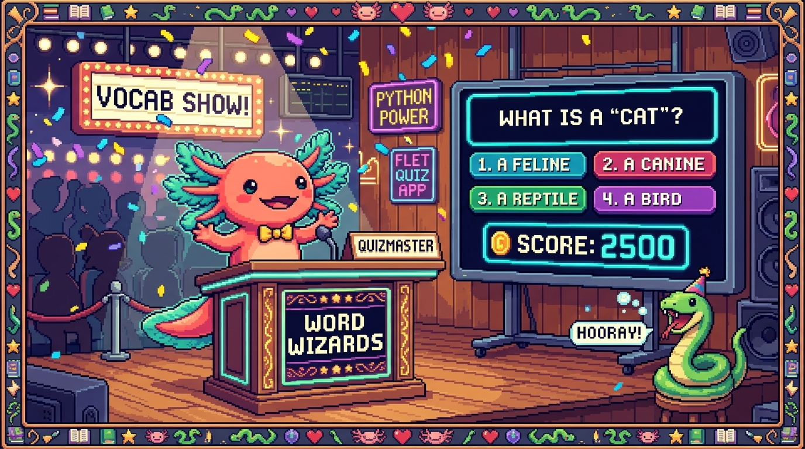

Capitulo 14 — Mini-proyecto: un quiz de vocabulario con Flet

Llego el momento, aprendiz. Bit, el ajolote, infla las branquias de pura emocion: hoy no vamos a estudiar una pieza suelta, vamos a juntarlas todas. Funciones, diccionarios, archivos, clases y Flet se encuentran en una sola app que de verdad corre en tu computadora. Vas a construir un quiz de vocabulario, con el mismo espiritu de PolyPaw (esa app de aprender idiomas hecha enteramente en Python). El usuario vera una pregunta, elegira una respuesta, ira sumando aciertos y, al final, guardaremos su puntaje en un archivo JSON. Respira hondo: este capitulo termina con una app que le puedes mostrar a quien quieras. 🦎
1. Que vamos a construir (y por que)
Imagina una mini-version de PolyPaw. PolyPaw es una app real de aprendizaje de idiomas hecha integramente en Python con el framework Flet, y guarda sus datos (las misiones, el progreso) en archivos JSON, sin recurrir a una base de datos pesada. Archivos como main.py, database_manager.py y la carpeta missions/*.json son su corazon.
Lo nuestro sera mucho mas pequeno, pero con el mismo ADN:
- Leeremos preguntas desde un archivo JSON (igual que PolyPaw lee sus misiones).
- Mostraremos cada pregunta con Flet, con botones para responder.
- Contaremos aciertos mientras el usuario juega.
- Guardaremos el puntaje en otro archivo JSON al terminar.
Cada parte se apoya en algo que ya viste en capitulos anteriores. Hoy lo amarramos todo.
🟦 ¿Que significa? — Mini-proyecto
Un proyecto pequeno pero completo: tiene principio, mitad y final, y produce algo que de verdad funciona. No es un ejercicio de una linea; es una app entera en miniatura. Para que sirve: para practicar como se combinan los conceptos en la vida real, donde ningun concepto vive solo. Donde se usa en un repo real: PolyPaw empezo siendo un mini-proyecto en Python antes de crecer; esa idea de "una app chiquita que corre" es justo esta.
💡 Tip
No trates de escribir todo el archivo de un tiron. Iremos seccion por seccion y al final juntamos las piezas. Asi, si algo falla, sabes exactamente cual revisar.
2. Preparar la carpeta del proyecto 💻
Vamos a crear una carpeta para nuestro quiz. Abre tu terminal y escribe:
# Esto NO es Python; son comandos de terminal. Los pongo para que sigas el paso.
# mkdir quiz-vocabulario
# cd quiz-vocabulario
Dentro de esa carpeta tendremos tres archivos:
preguntas.json— las preguntas del quiz (los datos).quiz.py— la logica (clases y funciones que manejan el juego).main.py— la interfaz con Flet (lo que el usuario ve).
🟦 ¿Que significa? — Separar datos, logica e interfaz
Es repartir tu app en tres responsabilidades: los datos (la informacion), la logica (las reglas y operaciones) y la interfaz (lo que se ve y se toca). Para que sirve: para que cada parte sea facil de leer y de cambiar sin romper las demas. Si quieres mas preguntas, tocas solo el JSON. Si quieres cambiar colores, tocas solo la interfaz. Donde se usa en un repo real: PolyPaw separa sus misiones (
missions/*.json, datos), sudatabase_manager.py(logica de guardado) ymain.py(interfaz Flet). Nosotros copiamos esa misma idea a escala mini.💡 Tip
Si ya instalaste Flet en un capitulo anterior, perfecto. Si no, en tu terminal:
pip install flet. Esto solo se hace una vez por computadora.
3. Las preguntas en JSON
Empecemos por los datos. Crea el archivo preguntas.json con este contenido:
[
{
"palabra": "Hola",
"opciones": ["Hello", "Goodbye", "Please"],
"correcta": "Hello"
},
{
"palabra": "Gracias",
"opciones": ["Sorry", "Thanks", "Yes"],
"correcta": "Thanks"
},
{
"palabra": "Perro",
"opciones": ["Cat", "Dog", "Bird"],
"correcta": "Dog"
}
]
🟦 ¿Que significa? — JSON
JSON (JavaScript Object Notation) es un formato de texto para guardar datos organizados con llaves
{}y corchetes[]. Funciona como una lista de fichas, cada una con sus campos. Para que sirve: para guardar informacion de modo que tanto humanos como programas la entiendan facil. Es legible y ligero. Donde se usa en un repo real: PolyPaw guarda TODAS sus misiones en archivos JSON dentro demissions/. Si abres uno, veras esta misma estructura de llaves y corchetes.
Fijate en la forma: el archivo entero es una lista (los corchetes []), y dentro hay tres objetos (las llaves {}), uno por pregunta. Cada objeto tiene tres campos: palabra, opciones y correcta.
🔎 En tu codigo
Cuando Python lea este JSON, la lista
[]se convertira en una lista de Python y cada{}en un diccionario. Justo lo que practicaste en los capitulos de listas y diccionarios. No es casualidad: por eso esos temas importaban tanto.⚠️ Cuidado
En JSON las comillas SIEMPRE son dobles (
"), nunca simples ('). Y no se permite una coma despues del ultimo elemento. Si Python se queja al leer el archivo, casi siempre es por una coma de mas o una comilla mal puesta.
4. Leer el JSON desde Python
Ahora, en quiz.py, escribiremos una funcion que lea ese archivo y nos devuelva la lista de preguntas.
import json
def cargar_preguntas(ruta):
"""Lee un archivo JSON y devuelve la lista de preguntas."""
with open(ruta, "r", encoding="utf-8") as archivo:
datos = json.load(archivo)
return datos
Vamos despacio, linea por linea.
🟦 ¿Que significa? — import json
importtrae un modulo (una caja de herramientas ya hecha) a tu programa.jsones el modulo que sabe leer y escribir el formato JSON. Para que sirve: para no tener que escribir tu mismo el codigo que entiende JSON; Python ya lo trae listo. Donde se usa en un repo real: eldatabase_manager.pyde PolyPaw importajsonpara leer y guardar el progreso del jugador.🟦 ¿Que significa? — Funcion
Una funcion es un bloque de codigo con nombre que hace una tarea y, a veces, devuelve un resultado. Se define con
defy se ejecuta cuando la "llamas" por su nombre. Para que sirve: para reutilizar codigo sin repetirlo y para ponerle un nombre claro a cada tarea. Donde se usa en un repo real: todo PolyPaw esta hecho de funciones; cada accion (cargar una mision, marcar un acierto) es una funcion con su nombre.🟦 ¿Que significa? — with open(...)
openabre un archivo. La palabrawithse encarga de cerrarlo solo cuando terminas, incluso si ocurre un error. Para que sirve: para leer o escribir archivos sin olvidarte de cerrarlos, un descuido comun que termina causando errores. Donde se usa en un repo real: cada vez que PolyPaw lee una mision desdemissions/, usa este mismo patronwith open(...).🟦 ¿Que significa? — encoding="utf-8"
Le dice a Python con que "alfabeto" leer el archivo. UTF-8 entiende tildes, la ñ y emojis. Para que sirve: para que palabras como "corazon" o "ñandu" no se rompan al leerse. Donde se usa en un repo real: PolyPaw maneja varios idiomas, asi que el
utf-8es obligatorio para no romper caracteres especiales.
json.load(archivo) toma el texto del archivo y lo convierte en estructuras de Python: nuestra lista de diccionarios. Eso lo guardamos en datos y lo devolvemos con return.
💡 Tip
Si vienes del modulo de JavaScript:
json.load()en Python es el primo deJSON.parse()en JS. Misma idea (texto → datos), distinta sintaxis.
5. Una clase para llevar el juego
Aqui aparece algo poderoso: una clase. Vamos a crear una clase Quiz que recuerde las preguntas, en cual vamos y cuantos aciertos llevamos.
class Quiz:
"""Lleva el estado del juego: preguntas, posicion y aciertos."""
def __init__(self, preguntas):
self.preguntas = preguntas
self.indice = 0
self.aciertos = 0
def pregunta_actual(self):
return self.preguntas[self.indice]
def responder(self, opcion_elegida):
"""Compara la opcion con la correcta y suma si acierta."""
correcta = self.pregunta_actual()["correcta"]
if opcion_elegida == correcta:
self.aciertos += 1
acerto = True
else:
acerto = False
self.indice += 1
return acerto
def hay_mas_preguntas(self):
return self.indice < len(self.preguntas)
def total(self):
return len(self.preguntas)
🟦 ¿Que significa? — Clase
Una clase es un molde para crear objetos que guardan datos y saben hacer cosas. Define que recuerda (atributos) y que puede hacer (metodos). Para que sirve: para juntar datos relacionados con las acciones que los manejan. Aqui, el
Quizguarda el progreso Y sabe responder preguntas. Donde se usa en un repo real: en apps como PolyPaw, las clases organizan cosas como una mision o el estado del jugador en un solo lugar ordenado.🟦 ¿Que significa? — init y self
__init__es el metodo que se ejecuta al crear un objeto; sirve para darle sus valores iniciales.selfes "yo mismo": la forma en que el objeto se refiere a sus propios datos. Para que sirve:__init__prepara el objeto recien nacido;selfpermite que cada objeto guarde sus propios valores sin mezclarse con los de otros. Donde se usa en un repo real: cualquier clase de cualquier app Python (incluida PolyPaw) usa__init__para arrancar con datos limpios.🟦 ¿Que significa? — Metodo
Un metodo es una funcion que vive dentro de una clase. Se llama sobre un objeto, por ejemplo
mi_quiz.responder("Dog"). Para que sirve: para que el objeto sepa "hacer cosas" con sus propios datos. Donde se usa en un repo real: los metodos son las acciones de cada objeto; en PolyPaw, un metodo podria marcar una mision como completada.🟦 ¿Que significa? — Atributo
Un atributo es un dato guardado dentro de un objeto, como
self.aciertos. Es la "memoria" del objeto. Para que sirve: para que el objeto recuerde su estado entre una accion y otra (cuantos aciertos llevas, en que pregunta vas). Donde se usa en un repo real: el progreso del jugador en PolyPaw vive en atributos antes de guardarse en JSON.
Mira el metodo responder: saca la respuesta correcta del diccionario de la pregunta actual con ["correcta"], la compara con lo que eligio el usuario y, si coincide, suma uno a self.aciertos. Luego avanza el self.indice. Diccionarios, clases y funciones trabajando juntos.
🟦 ¿Que significa? — len()
len()es una funcion de Python que te dice cuantos elementos tiene algo (una lista, un texto).len(self.preguntas)devuelve cuantas preguntas hay en total. Para que sirve: para contar el tamano de una lista sin recorrerla a mano; por ejemplo, para saber cuantas preguntas quedan. Donde se usa en un repo real: PolyPaw usalen()para saber cuantas misiones tiene un pack y mostrar el avance ("3 de 10").💡 Tip
Si vienes de JavaScript, una clase en Python se parece mucho a una de JS, pero aqui usas
selfdonde alla usabasthis, y el constructor se llama__init__en lugar deconstructor.
6. Guardar el puntaje en JSON
Cuando el juego termine, queremos guardar el resultado. Volvemos a quiz.py y agregamos una funcion para escribir:
from datetime import datetime
def guardar_puntaje(ruta, aciertos, total):
"""Anade el puntaje de esta partida a un archivo JSON de historial."""
nuevo = {
"aciertos": aciertos,
"total": total,
"fecha": datetime.now().strftime("%Y-%m-%d %H:%M"),
}
try:
with open(ruta, "r", encoding="utf-8") as archivo:
historial = json.load(archivo)
except FileNotFoundError:
historial = []
historial.append(nuevo)
with open(ruta, "w", encoding="utf-8") as archivo:
json.dump(historial, archivo, ensure_ascii=False, indent=2)
Esta funcion hace tres cosas: arma el registro nuevo, lee el historial que ya exista (o empieza vacio si el archivo aun no existe) y guarda todo de vuelta.
🟦 ¿Que significa? — datetime y strftime
datetimees un modulo de Python para trabajar con fechas y horas.datetime.now()te da el momento exacto de ahora mismo, y.strftime("%Y-%m-%d %H:%M")lo convierte en texto con el formato que tu elijas (ano-mes-dia hora:minuto). Para que sirve: para guardar CUANDO ocurrio algo, como la fecha de cada partida, en un texto ordenado y legible. Donde se usa en un repo real: PolyPaw guarda marcas de tiempo asi para saber cuando el jugador completo cada mision.🟦 ¿Que significa? — append
appendes un metodo de las listas que agrega un elemento al final.historial.append(nuevo)mete el registro nuevo al final de la lista de partidas. Para que sirve: para hacer crecer una lista de a un elemento, sin borrar lo que ya tenia. Donde se usa en un repo real: PolyPaw usaappendpara ir sumando misiones completadas a la lista de progreso del jugador.🟦 ¿Que significa? — json.dump
Es lo contrario de
json.load: toma datos de Python (listas, diccionarios) y los escribe como texto JSON en un archivo. Para que sirve: para guardar resultados de forma permanente, que sobrevivan al cerrar el programa. Donde se usa en un repo real: eldatabase_manager.pyde PolyPaw usa esta idea para guardar el avance del jugador despues de cada mision.🟦 ¿Que significa? — Modo "w" vs "r"
Al abrir un archivo,
"r"es read (leer) y"w"es write (escribir). El modo"w"reemplaza el contenido entero del archivo. Para que sirve:"r"para mirar datos sin tocarlos;"w"para guardar datos nuevos. Donde se usa en un repo real: toda app que persiste datos en archivos alterna entre estos dos modos.🟦 ¿Que significa? — try / except
Es una forma de "intentar" algo que podria fallar y tener un plan B por si falla.
tryintenta;exceptcaptura el error y reacciona. Para que sirve: para que tu programa no se caiga ante problemas previsibles, como un archivo que todavia no existe. Donde se usa en un repo real: cualquier codigo serio que lea archivos usatry/exceptpor si el archivo no esta.⚠️ Cuidado
El modo
"w"borra lo que habia en el archivo. Por eso primero LEEMOS el historial, le agregamos el nuevo registro conappendy solo entonces escribimos. Si escribieras directo con"w"sin leer antes, perderias las partidas anteriores.💡 Tip
ensure_ascii=Falsehace que las tildes y la ñ se guarden bonitas en lugar de como codigos raros. Yindent=2deja el JSON ordenado y legible, con sangrias.
7. La interfaz con Flet
Ahora lo visual. En main.py construimos la pantalla con Flet.
🟦 ¿Que significa? — Flet
Flet es un framework de Python para crear interfaces graficas (botones, textos, ventanas) sin saber HTML ni JavaScript. Escribes solo Python y Flet dibuja la pantalla. Para que sirve: para hacer apps de escritorio, web o movil con un unico lenguaje: Python. Donde se usa en un repo real: PolyPaw esta hecho integramente con Flet; toda su pantalla, sus botones y misiones se dibujan asi.
🟦 ¿Que significa? — Framework
Un framework es una estructura ya armada que te da piezas y reglas para construir mas rapido. Tu pones tu logica; el framework pone los cimientos. Para que sirve: para no reinventar lo basico (ventanas, botones, eventos) en cada proyecto. Donde se usa en un repo real: Flet es el framework de PolyPaw; en el modulo de JavaScript viste que React es un framework para la web. Misma idea, distintos mundos.
Aqui esta el archivo main.py completo:
import flet as ft
from quiz import cargar_preguntas, guardar_puntaje, Quiz
def main(pagina):
pagina.title = "Quiz de vocabulario"
pagina.window_width = 400
pagina.window_height = 400
preguntas = cargar_preguntas("preguntas.json")
juego = Quiz(preguntas)
texto_palabra = ft.Text(size=28, weight="bold")
mensaje = ft.Text()
columna_opciones = ft.Column()
def mostrar_pregunta():
actual = juego.pregunta_actual()
texto_palabra.value = f"Traduce: {actual['palabra']}"
mensaje.value = f"Pregunta {juego.indice + 1} de {juego.total()}"
columna_opciones.controls.clear()
for opcion in actual["opciones"]:
boton = ft.ElevatedButton(
text=opcion,
on_click=lambda e, op=opcion: al_responder(op),
)
columna_opciones.controls.append(boton)
pagina.update()
def al_responder(opcion):
juego.responder(opcion)
if juego.hay_mas_preguntas():
mostrar_pregunta()
else:
mostrar_final()
def mostrar_final():
guardar_puntaje("puntajes.json", juego.aciertos, juego.total())
texto_palabra.value = "¡Quiz terminado! 🎉"
mensaje.value = f"Aciertos: {juego.aciertos} de {juego.total()}"
columna_opciones.controls.clear()
pagina.update()
pagina.add(texto_palabra, mensaje, columna_opciones)
mostrar_pregunta()
ft.app(target=main)
Vamos a desmenuzarlo, porque aqui se junta TODO.
🟦 ¿Que significa? — ft.app(target=main)
Es la linea que arranca la app de Flet. Le decimos que use nuestra funcion
mainpara construir la pantalla. Para que sirve: para encender la aplicacion y abrir la ventana. Donde se usa en un repo real: elmain.pyde PolyPaw termina con una llamada parecida que enciende toda la app.🟦 ¿Que significa? — La pagina (page)
El objeto
paginarepresenta la ventana de la app. Le agregas controles conpagina.add(...)y refrescas la vista conpagina.update(). Para que sirve: es el lienzo donde colocas todo lo que el usuario vera. Donde se usa en un repo real: en PolyPaw, la pagina es el contenedor de cada pantalla de mision.🟦 ¿Que significa? — Control (Text, ElevatedButton, Column)
Un control es una pieza visual: un texto (
ft.Text), un boton (ft.ElevatedButton), una columna que apila cosas (ft.Column). Para que sirve: para construir la pantalla juntando piezas como bloques de lego. Donde se usa en un repo real: PolyPaw arma sus pantallas combinando estos mismos controles de Flet.🟦 ¿Que significa? — f-string
Un f-string es un texto que empieza con
f"..."y permite meter valores dentro usando llaves{}. Por ejemplo,f"Traduce: {actual['palabra']}"arma el texto pegando la palabra de la pregunta. Para que sirve: para construir mensajes que mezclan texto fijo con datos que cambian, de forma corta y clara. Donde se usa en un repo real: PolyPaw usa f-strings por todas partes para mostrar textos como "Mision 3 de 10" con numeros que cambian.🟦 ¿Que significa? — Evento on_click
on_clickdice "cuando hagan clic en este boton, ejecuta esta funcion". Es la forma de reaccionar a lo que hace el usuario. Para que sirve: para que la app responda a clics, no solo muestre cosas. Donde se usa en un repo real: cada boton de respuesta en PolyPaw usa un evento parecido para registrar lo que el jugador toca.🟦 ¿Que significa? — lambda
Una
lambdaes una mini-funcion sin nombre, escrita en una sola linea. Aqui la usamos para "recordar" que opcion corresponde a cada boton. Para que sirve: para crear funciones cortas al vuelo, sobre todo en eventos. Donde se usa en un repo real: Flet (y PolyPaw) usa lambdas para conectar cada boton con su accion exacta.⚠️ Cuidado
Fijate en
lambda e, op=opcion: al_responder(op). Eseop=opciones clave: captura el valor de la opcion en ese momento del bucle. Si escribieras sololambda e: al_responder(opcion), todos los botones terminarian usando la ULTIMA opcion del bucle. Es un error clasico, y elop=opcionlo evita.🔎 En tu codigo
Mira como todo se conecta:
cargar_preguntas(archivos + JSON) llena elQuiz(clase).mostrar_preguntalee un diccionario y crea controles de Flet.al_responderllama al metodoresponderde la clase. Y al final,guardar_puntajeescribe en JSON. Cada concepto del modulo aparece aqui.
8. Probar la app 💻
Con los tres archivos en la misma carpeta, abre la terminal en esa carpeta y corre:
# En la terminal (no es Python):
# python main.py
Deberia abrirse una ventana que muestra "Traduce: Hola" con tres botones. Haz clic en uno y pasaras a la siguiente pregunta. Al terminar veras tus aciertos, y en la carpeta aparecera un archivo nuevo: puntajes.json. Abrelo: ahi esta tu partida guardada.
💡 Tip
¿No se abre nada? Revisa que los tres archivos esten en la MISMA carpeta y que
preguntas.jsonno tenga errores de comas o comillas. La consola te dira la linea exacta del problema.⚠️ Cuidado
Si ves un error que dice
ModuleNotFoundError: No module named 'flet', significa que Flet no esta instalado en tu entorno. Vuelve al paso 2 y correpip install flet.
9. Como se ve el resultado guardado
Despues de jugar una vez, tu puntajes.json se vera asi:
[
{
"aciertos": 2,
"total": 3,
"fecha": "2026-06-25 14:30"
}
]
Y si juegas otra vez, se agregara un segundo registro a la lista, sin borrar el primero. Eso lo logra el append que pusimos antes de escribir. Acabas de construir un historial persistente, igual que el progreso de un jugador en PolyPaw.
🔎 En tu codigo
Este archivo de puntajes es exactamente la idea de los
missions/*.jsonde PolyPaw: una lista de objetos JSON que crece con el tiempo y que tu programa lee y escribe. Lo que hiciste en chiquito es lo mismo que hacen las apps de verdad.
10. Ideas para crecer tu quiz
Tu mini-proyecto ya funciona, pero hay espacio para mas. Algunas direcciones:
- Agregar mas preguntas: solo editas
preguntas.json, sin tocar el codigo. - Mostrar un color verde o rojo segun si acertaste (mas controles de Flet).
- Barajar las preguntas con el modulo
randompara que cada partida sea distinta. - Mostrar el mejor puntaje historico leyendo
puntajes.jsonal inicio.
💡 Tip
Cada mejora se apoya en una pieza que ya conoces. Crecer una app es agregar piezas pequenas, una a la vez. Asi crecio PolyPaw: empezo simple y fue sumando.
11. Lo que lograste
Para un momento y mira lo que hiciste, aprendiz. Combinaste:
- Archivos y JSON para leer y guardar datos.
- Funciones para organizar cada tarea.
- Diccionarios y listas para mover la informacion.
- Clases para llevar el estado del juego.
- Flet para una interfaz real con la que el usuario interactua.
Eso ya no es "estudiar Python". Eso es construir software. Bit mueve la cola con orgullo: pasaste de aprender piezas sueltas a ensamblar una app completa que corre, responde y recuerda. Poca gente que empieza a programar llega a juntar tantas piezas en un solo proyecto que funciona. Tu lo hiciste. 🦎🎉
✅ Checklist — ¿ya domino esto?
- [ ] Entiendo por que separamos datos (
preguntas.json), logica (quiz.py) e interfaz (main.py). - [ ] Se leer un archivo JSON con
json.loadywith open(...). - [ ] Se que una clase guarda estado en atributos (
self.aciertos) y actua con metodos (responder). - [ ] Entiendo como un metodo lee un diccionario con
["correcta"]para comparar respuestas. - [ ] Se guardar datos en JSON con
json.dump, leyendo antes para no borrar el historial. - [ ] Entiendo que hace
ft.app(target=main)y como agrego controles a la pagina. - [ ] Se por que un boton usa
on_clicky por que lalambdallevaop=opcion. - [ ] Logre correr
python main.pyy ver mi puntaje guardado enpuntajes.json.
🧪 Ejercicios
-
Sin computadora. En tus palabras, explica que hace cada uno de los tres archivos del proyecto (
preguntas.json,quiz.py,main.py) y por que estan separados. -
Sin computadora. Mira el metodo
responderde la claseQuiz. Si el usuario elige una opcion incorrecta, ¿cambiaself.aciertos? ¿Avanza igual elself.indice? Razona tu respuesta leyendo el codigo. -
💻 Mas preguntas. Agrega dos preguntas nuevas a
preguntas.json(por ejemplo "Casa" → "House", "Agua" → "Water"). Vuelve a correr la app y comprueba que ahora el quiz tiene cinco preguntas. No deberias tocar ningun archivo.py. -
💻 Mensaje de acierto. Modifica
al_responderpara que, antes de avanzar, ponga enmensaje.valueel texto "¡Correcto!" o "Casi..." segun lo que devuelvajuego.responder(opcion). Pista: el metodoresponderya devuelveTrueoFalse. -
💻 Mejor puntaje. Al iniciar la app, lee
puntajes.json(si existe) y muestra arriba el mejor numero de aciertos historico. Usa untry/exceptpor si el archivo aun no existe. -
💻 Barajar. Importa el modulo
randomy usarandom.shuffle(preguntas)justo despues de cargarlas, para que cada partida tenga las preguntas en distinto orden. Comprueba que el quiz sigue funcionando.